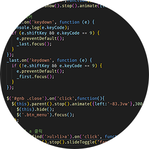
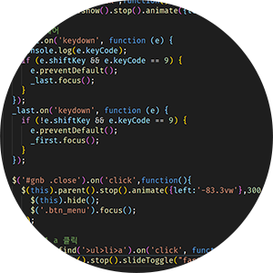

지금까지 저의
작업물을 소개합니다
지금까지 저의
작업물을 소개합니다
주요 타켓층의 연령대에 맞도록 리디자인 하였고, Markup/css/jQuery를 통해 기존 사이트에서 접근성을 지키지못한 부분을 보완하였습니다.
재능교육의 대표색인 빨간색을 활용하여 사용하였습니다
가독성을 위해 2가지의 폰트를 사용하였습니다
제목
#여기어때 잘난체
JEI 재능교육 스스로
JEI 재능교육 스스로
본문
#Noto Sans KR
JEI 재능교육 스스로
JEI 재능교육 스스로
각 태그에 알맞은 role,property,aria속성을 기입
form의 유효성 확인을 위해 정규표현식을 사용
switch문으로 키보드 제어
포커스 제어를 위해 tabIndex와 focus()를 사용
다양한 분야의 아티스트들의 재능기부 활동을 소개하고 함께 활동 할 팀원 모집 및 후원금 모으기를 홍보하는 웹페이지 기획
black&white 컨셉이지만 눈의 피로를 적게하기 위해 진한 gray색을 사용하였습니다
디자인컨셉에 맞게 고딕체를 사용하였습니다
Point
#Cormorant
WHAT 재능기부
WHAT 재능기부
본문
#Poppins
WHAT 재능기부
WHAT 재능기부
HTML5를 사용하여 의미있는 마크업을 하여 사용자가 보다 사용하고 이해하기 쉽도록 구성
 

조건문을 통해 키보드 제어 접근성을 지키고, 네비게이션안에서만 포커스가 이동하도록 제어
만 5~8세 대상 3D 애니메이션을 활용한 AR 기반 앱과 실물교구(AR인식 폼보드 장소 교구와 3D프린팅 동전, 지폐)를 통해 수의 개념과 관련된 학습 능력, 논리력, 사고력 증진을 돕는 프로그램 기획
누리과정 수학영역을 모바일 게임에 접목
다양한 실제 장소와 연계한 학습

실물 교구를 활용하여 다양한 감각을 자극
AR기술을 접목하여 흥미와 몰입도 향상
고대비의 컬러풀한 색을 사용하였습니다
Main
Sub
가독성을 위해 2가지의 폰트를 사용하였습니다
제목
#여기어때 잘난체
키즈빌리지AR:수학여행
키즈빌리지AR:수학여행
본문
#Noto Sans CJK KR
키즈빌리지AR:수학여행
키즈빌리지AR:수학여행
유아의 인터렉티브한 학습을 위해 다양한 교구를 직접 제작하여 게임에 활용 할 수 있도록 하였습니다.
이용설명서와 튜토리얼 영상을 제작하여 사용자가 게임을 보다 쉽고 빠르게 할 수 있도록 하였습니다.
또한 한글을 읽지 못하는 유아를 위해 녹음을 하여 게임을 진행 할 수 있도록 하였습니다.
AR을 인식하기 위해 필요한 AR인식 교구 입니다.
이 교구를 세워 카메라에 비추어 인식 후 게임을 진행합니다.
각 장소마다 어울리도록 일러스트를 통해 디자인 하였습니다.
대표 캐릭터를 활용하여 마트게임에서 활용 할 수 있는 지폐를 디자인 하였습니다.